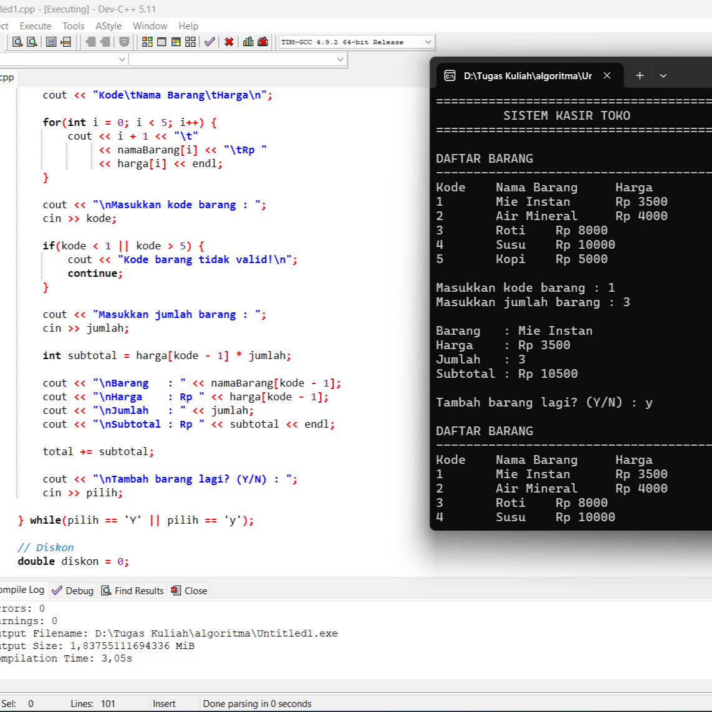

Mengikuti organisasi mahasiwa HMP-TK Universitas Duta Bangsa Surakarta sebagai Devisi Minat Bakat.
Halo, nama saya
Fajar Jaya Mulia
Menguasai dasar-dasar teknik komputer seperti instalasi dan konfigurasi sistem operasi, troubleshooting perangkat keras dan perangkat lunak, konfigurasi jaringan komputer, serta pemrograman dasar. Saya terbiasa bekerja secara teliti, kreatif, dan mampu berkolaborasi dalam tim untuk mendukung keberhasilan berbagai kegiatan maupun proyek.

Riwayat
Pengalaman
Mengikuti organisasi mahasiwa Estetika Universitas Duta Bangsa Surakarta sebagai Devisi Media, Januari 2026 - Sekarang.
Menjadi panitia LDK organisasi mahasiswa Fakultas Ilmu Komputer Universitas Duta Bangasa Surakarta.
Menjadi Panitia pada acara Solo Batik Carnival sebagai Media.
Karya
Projek

System kasir
Memebuat system kasir menggunakan bahasa pemrograman C++.

Projek Pembuatan alat ukur
Membuat alat ukur intensitas cahaya mengguanakan Arduino Uno.

Poster Even
Projek pembuatan desain feed instagrem untuk even Solo Batik Carnival 17.
Kemampuan
Keahlian
.jpeg)
Nama Projek 1
memiliki pengetahuan tentang pemeliharaan perangkat keras komputer.

Nama Projek 2
memiliki kemampuan dalam berfikir kreatif dalam desain grafis dan dalam menyelesaikan masalah.

Nama Projek 3
Memiliki kemampuan dasar dalam pemrograman C++ dan mampu membuat sistem sederhana.
Sertifikat

Saya menjadi panitia pada Latihan Dasar Kepemimpinan .

Deskripsi singkat projek, teknologi yang digunakan, dan hasil yang dicapai.

Deskripsi singkat projek, teknologi yang digunakan, dan hasil yang dicapai.
Karya

Poster yang saya buat waktu sleksi organisasi mahaiswa Estetika.

Poster yang saya buat saat menjadi panitia Solo Batik Carnival.

Projek matkul fisika membuat alat ukur Lux meter (sensor cahaya).
Kontak Saya
Email: fajarjayamulia9@gmail.com
WhataApp: 085727033802
Instagram: @fajarjayamulia_